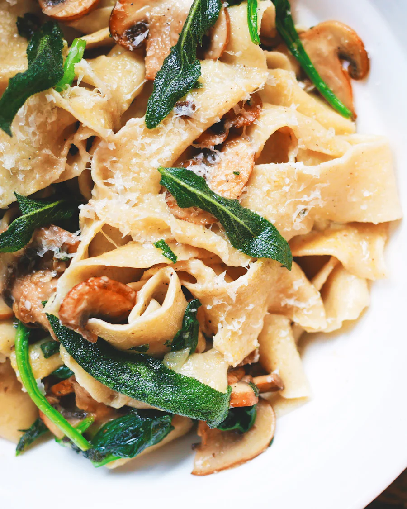

mit Eiern vom Hof Brandt
jeden Morgen ab 7 Uhr
Pasta fresca
Mehl, Eier, ein bisschen Grieß und das lange Nudelholz, das schon Rosellas Mutter gehört hat. Tagliatelle, Pappardelle und Ravioli entstehen jeden Morgen frisch – was mittags weg ist, ist weg.
Tagliatelle · Pappardelle · Ravioli · Gnocchi
„Den Teig macht man nicht mit dem Kopf, sondern mit den Händen. Die wissen, wann er fertig ist.“